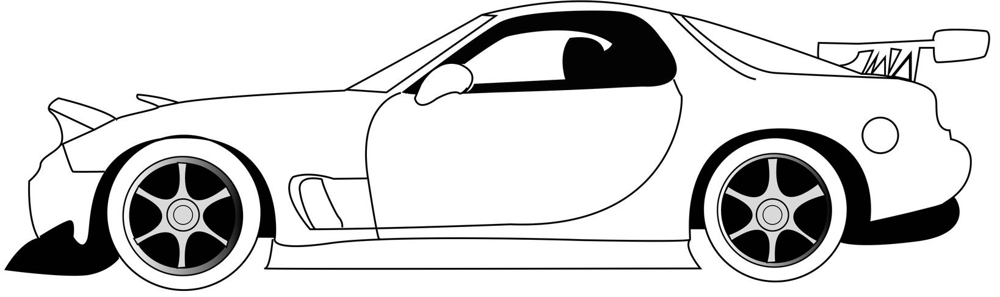

Overview
Purpose
I have created this webpage so I can inform as many as are willing to listen about JDM vehicles. This website is here to provide a basic understanding of JDM vehicles to those who might be interested in learning about them.
Audience
I am reaching out to anyone who would like to learn more about JDM cars. JDM car enthusiasts are always welcome to share their stories or car builds here.
Branding
JDM Space
Style Guide
Color Palette
Palette URL: https://coolors.co/6c698d-bfafa6-d4d2d5| Primary | Secondary | Accent 1 | Accent 2 |
|---|---|---|---|
| [#6C698D] | [#BFAFA6] | [#D4D2D5] |
Typography
Heading Font: Rock Salt
Paragraph Font: Ubuntu
Navigation
Site Map
Content
Home page
What is a JDM Car?
To answer this question in short, JDM is short for Japanese Domestic Market. These are cars that originated in Japan and have since be manufactured all over the world. You may have heard of several brands of JDM cars including Toyota, Subaru, Mazda, and Honda. These are all big-time car manufacturers all over the world, but you might be wondering what makes specific JDM car models from the 1990s-2000s so rare and sought after? The answer is supply and demand. The supply for those specific types of vehicles is diminishing while popularity and demand for them is increasing. They are always going to make sleeker, faster, stronger cars as time goes on, but they can’t remake the gems of the past.


History
Background Information
JDM cars began to take hold in the late ‘80s when car enthusiasts started to notice Japan’s sports cars. At the beginning, Nissan, Mitsubishi, Suzuki, and Honda were the top competitors for Japanese made vehicles. There were, however, many more makes and models that started to jump onto the scene. Some examples are Toyota, Mazda, Lexus, Subaru, and Infinity. These may be names that you have heard quite frequently, but all of these brands started out in Japan and have evolved into what they are today.
Brand Information
Back in the ‘80s and ‘90s there were several brands that reigned when it came to JDM vehicles. Those brands were Honda, Toyota, and Nissan. The brand Honda first started out as a bicycle with a motor on it. They then transformed it into a motorcycle, and later went on to manufacture cars and sports cars. Honda was the first Japanese manufacturer to produce vehicles in North America. They then progressed into making faster and more reliable vehicles and now we see them as one of the top manufactures in the world. Toyota started back in 1933 and produced their first car, the Model AA sedan, in 1936. In 1957 they established Toyota Motor Sales in the U.S.A. In the late ‘80s and early ’90s they grew significantly due to the innovation of their luxury brand Lexus, and the hybrid-vehicle the Prius. They have now also become one of the top manufacturers around the world and continue to make amazing innovations. Lastly, there is Nissan. Nissan was also founded in 1933 in Japan. They didn’t move to the U.S. until 1958, but while they were still in Japan they made one of the most sought after JDM vehicles. The Nissan Skyline. They continued to innovate and produce many well made vehicles in the U.S. as well as in Japan. Nissan is now one of the top competitors around the world.
Purpose of JDM Cars
JDM vehicles were meant to be high-performance cars that were capable of drifting and racing around of the streets of Japan. These cars aren’t just for looks, they are customized to look and perform at the level the owner desires. Many of which desire extremely high power machines that can tear up the road and assure victory in a race. The essence of a JDM car is to take a massed produced vehicle and make it one of a kind through modifications and a lot of hard work. Now-a-days many people all over the world seek out the “gems” in the JDM industry so they can turn them into a one-of-a-kind beauty.

Car Builds
Amazing JDM Builds
I will now show you what the true essence of JDM vehicles is by giving you a glimpse of what is possible when it comes to customizing your car.
.jpg)
.jpg)
Wireframes
Create three wireframes for your site. One for each page and list them here
Home
[Any additional details about home that the wireframe does not make clear]
[Page 2]
[Any additional details about page 2 that the wireframe does not make clear]
[Page 3]
[Any additional details about page 3 that the wireframe does not make clear]